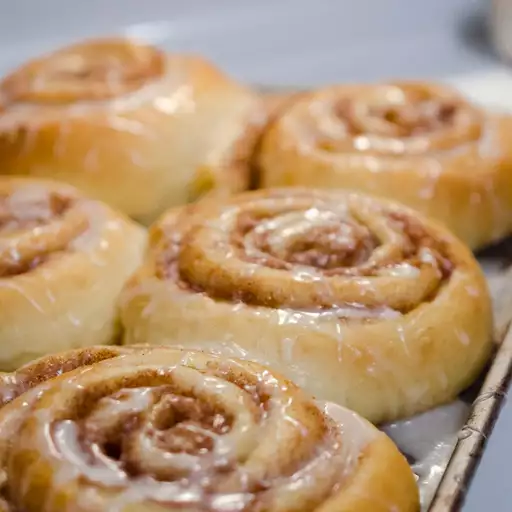

Danish Cinnamon Snails

Description
Americans would call these cinnamon rolls--but this version is the original Danish version and it's absolutely wonderful. They are traditionally served with coffee or tea at Christmas time, and they are to die for!
Ingredients
- 1 cup milk
- 0.6 ounce cake yeast
- 6 1/2 tablespoons butter
- 2 eggs
- 1/2 teaspoon ground cardamom
- 2 tablespoons white sugar
- 1/4 teaspoon salt
- 4 cups all-purpose flour
- 2/3 cup butter
- 1/2 cup white sugar
- 2 tablespoons ground cinnamon
Steps
- Pour the warm milk into a mixing bowl and mash in the fresh cake yeast. Mix in 6 1/2 tablespoons of soft butter, eggs, cardamom, 2 tablespoons sugar, salt, and 3 1/2 cups of the flour. Use a wooden spoon to mix the dough. If it's very sticky, mix in the remaining 1/2 cup of flour. Cover the bowl and let the dough rise for 30 minutes.
- Cream together the 2/3 cup butter and 1/2 cup sugar. Stir in the cinnamon.
- Transfer the dough to a floured surface and knead it until it's firm, about 3 minutes. Divide the dough in half; roll each half into a rectangle no more than 1/2 inch thick. Spread each rectangle with half the filling.
- Stack one layer of dough and filling on top of the other rectangle of dough, filling-side up. Roll the dough up, starting with the edge closest to you, to form a long log. Cut the log into 1 inch-thick slices.
- Preheat an oven to 425 degrees F (220 degrees C). Line a baking sheet with parchment paper, or grease a baking dish or two cake pans.
- Place the rolls on the prepared baking sheet, spacing them about 3 inches apart. If you like pull-apart rolls, arrange them in a greased baking dish or cake pans, spacing the rolls about 1 inch apart. Place the uneven end pieces on the baking sheet cut-side up for the best presentation. Let the rolls rest 20 minutes before baking.
- Bake the snails in the preheated oven until golden brown, about 10 minutes. Pull-apart rolls will take longer to bake: after 10 minutes, reduce the oven temperature to 350 degrees F (175 degrees C) and bake the rolls until the sides are fully set, about 10 minutes longer. Cover the baking dish with foil if the rolls begin to get too brown.